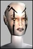

| Pages (13): « First ... « 11 12 [13] |  Last Thread Next Thread Last Thread Next Thread  |
| Author | Thread |
| Inocybe Supa Leet  Registered: Nov 2001 | HEALS ... HEALS * The minimum on our heals is too low. The minimum-maximum range on our heals is not up to par given the PvM changes over the year. TEAM HEALS * Our team heals are few and too far apart. * The minimim on our team heals is too low The minimum-maximum heal range is not up to par given the PvM changes over the year. |
 April 17th, 2002 15:47 April 17th, 2002 15:47 | #241 |
| mrpres1dent advy.org Registered: Nov 2001 | In all honesty, there's a lot of good ideas in the.. what.. 14 pages or whatever now. But. I'm an Adventurer, and I don't even want to read this thread. It needs like a wipe or something. Hehe. Maybe we should start another thread called Top 10 and try to collaborate and infuse our ideas since we lost our home on the SGMMORPG forums, Ino. |
| April 20th, 2002 00:00 | #242 |
| Inocybe Supa Leet Registered: Nov 2001 | Agreed Flow. I was feeling the same thing after posting and realising what a fiasco all our Advy sticky threads have become. |
| April 20th, 2002 03:54 | #243 |
| Khazidhe Leetas Registered: Jan 2002 | Re: Adventurers! quote:lol... that would have been something... perhaps we could get a little camp fire as well.. =P |
| April 21st, 2002 18:57 | #244 |
| Lacaan Supa Leet  Registered: Jan 2002 | check the one in my sig.  |
| April 21st, 2002 19:08 | #245 |
| Lazz Phear Leet  Registered: Nov 2001 | We've been posting great ideas about what has to be done for the Adventurers profession. Some ideas are in this thread but I think a lot is burried in the other threads. I'm a bit scared that the important issues and good ideas are left out/forgotten when Funcom finally comes around to the Adv profession. We need a new top ten thread when we are closing in on the Adv correction patch, that way we could all make an effort in gathering the great ideas from the 'past'... |
| April 23rd, 2002 08:33 | #246 |
| Bandicot Eleet  Registered: Nov 2001 | Some Melee changes or concerns First thing that I wonder now that im trying a 2 HE adventrer is why is the fast attack skill not light green with the rest of the melee skills? It would seem to be more needed then sneak attack since or conceal skill is pretty much average. Just doesn't make sense to me why one of the melee skills is light blue. Secondly I think that Brawl should be light blue. It says in our profession description that we are not supposed to have any real weaknesses and this is a real weakness for melee adventrers. I say light blue cause the enforcers are the masters at that skill but we should at least be average. The dimach can stay the same since even enforcers have that one dark blue. I know you don't like changing skills cause we won't get back the wasted ip points since it was dark blue before, but I see the change to be more helpful as it will cost less to increase afterwards. Just my coments and concerns here. |
| April 23rd, 2002 15:21 | #247 |
| Evilmery Leetas  Registered: Feb 2002 | Re: Re: true invisibility quote:Very good question, what about pvp. i am not so afraid of an adv shooting me out of my plane in DAV. I am rather afraid of an un-tabbable agent in rock/tree form in 2ho/mmd. Someone ever think about this? |
| April 26th, 2002 06:58 | #248 |
| Khazidhe Leetas Registered: Jan 2002 | Re: Some Melee changes or concerns quote:Well, I would dare to say that Dimach is more a MA attack (Soul Attack) than Enforcer...  |
| April 26th, 2002 12:22 | #249 |
| Glarawyn Lurker  Registered: Apr 2002 | Coming in late, but hey, I have my top 10. 1) One thing I thing fits the Adventurer profession well would be a tame/charm/train animal ability. I don't know how Funcom has AO's creatures classified, but we should NOT be able to charm any Homo Breed (leave that to the Crats. For that matter, why can Crats charm just about anything? Seems like it should be limited to Homo breeds...), mutants (like eyes, shades, claws, etc.), or robots/cyborgs. But wildlife like Minibulls, RollerRats, Reets, Wolves, etc. are fair game. Maybe even the ability to just summon a pet. After all, Adventurers are supposed to spend their time away from the city with nature. It gets lonely when you're in the middle of nowhere with nobody to talk to, so we should have pets! 2) If I can turn into a reet I want to fly! Reets shouldn't switch to swim speed when hitting water. Does anyone else get the urge to dive bomb Yalms when they're in reet form? Kinda hard to do since we're not actually flying! What use are wings if you can't really fly? 3) Ability to be ridden on bigger morphs. Wouldn't it be kinda cool to be a wolf and have another player character ride you around? Or be a dragon and have someone (or mutiple someones) on your back? Seems like a good place to stick a Doc, NT, or Engineer (or any ranged attacker for that matter) A cool dragon attack might be the ability to pick up an attacker, fly as high as you can, then drop them on their sorry butts. Setup as an add on nano to the wolf and dragon morphs. Cats wouldn't tolerate a rider, and the fighting animations wouldn't make riding any fun anyway. 4) Able to renew morphs without terminating the morph program. If riding was implemented (yeah right, would be cool though) having to terminate the morph, rerun it, then reinvite your rider would be just annoying. Annoying as it is that they have to be terminated to be renewed. 5) A reason to have an Adventuring skill over 200. Only reason for a 200 Adventuring skill is large backpacks as far as I know. 6) Instead of Calm/Root/Scare...tranquilizers! Adventurer only weapons that take specal ammo to drug target up with tranquilizers. (so guns would take two kinds of ammo, and blades would just have a means of injecting the drug) Would be an added command like FlingShot, but depend on adventuring skill as deploying tranquilizers with a weapon is no different than attacking with that weapon. Low level tranquilizers will slow, higher level will sleep. Or maybe instead of weapons do tranquilizers as charged nano critters! Leaves your weapon choice free, new commands and new weapons do not have to be added. Profession lock them though. 7) Pistol/1HE buffs for Adventurers, Multi-Ranged/Multi-Melee Buffs. Less than wrangles, more than general nanos. (Yay! Coming!) But what about changing the damage type done by pistols? Would be interesting to have poison bullets, chemical bullets, or add parts to change the damage type, or add special attacks to weapons that do a different damage type and then have to recharge before using again. 8) Root breaker. Adventurers are too crafty to stay rooted/snared. 9 and 10: Covered with upcoming patches, so no need to post them. Maybe I'll come up with some other ideas down the line... |
| May 15th, 2002 10:11 | #250 |
| Sirenia Leet  Registered: May 2002 | ...I wont go into huge detail about most stuff that has already been covered, but rather why I chose to be an adventurer to begin with. It seemed you guys were saying that we could have the best of all worlds, but naturally I can see the tradeoff in that by getting that we would not be up to snuff on the same exact level as other professions in certain skills. Problem is that we are so gimped in almost every way that we lose the very thing we should be able to do: ADVENTURE! To me an adventurer is someone who SHOULD be able to solo dungeons by hook or by crook, but instead my level 51 adv gets TRASHED in almost every dungeon I enter, leaving me with no choice but to leech onto stronger players if I want to level up. I dont play this game for bragging rights, nor for PVP glory... I just play for fun and by stripping us bare like you have we get little or no sense of accomplishment because the vast majority of us are left in a hole we are never going to climb out of. The IP reset is a great Idea, but hey... just how many of us are gonna know where to go with it? We already made countless errors due to your shoddy way of informing us regarding weapon skills, but hey... they ALL seem nerfed. Oh well... Thats all, Just give us a chance ok? I love this game... |
| May 25th, 2002 10:22 | #251 |
| tomtemor Supa Leet  Registered: May 2002 | 1: Poison, let us use poison/natural forces to enhance our weapons, say you use a rider that does normal melee damage. then give us buffs/items that can be used to alter the damage of the weapon. I mean we are afterall Adventurers, and we are supposed to be able to use nature to our advantage? 2: More morphs, why not let us get a few more morphs? For example: Select mob, run morph, if skill is high enough you take the shape of that mob for say... 30 minutes on the lowest one, 45 minutes on the middle and 1 hour on the high level one... 3: Blend with nature, better conceal skills, and maybe even here morphs that makes us dissappear from the map and turn into a tree? bush? or any other plant thing. this could be useful while doing PvP in 25% or 0% zones. 4: More 1HE/Brawl/Heavy Weapons, the SOL Fire Executioner is a good start in 14.2. 5: Higher runbuffs, we all know that the adventurer gets pretty good runbuffs with the reet/wolf line, BUT, we need a followup on the Free Movement buff, say a 200 and a 400 runbuff? 6: Add a higher crit buff to Grinning Hunter and Calias Form Sabretooth, say 3% on Grinning Hunter and 5% on Calias Form Sabretooth. 7: Add some adventurer only item that are not on Tarasque "the dragon owned by Storm"... and since all the Adventurers i know of have trouble with Bio Met and their heals, add a new ring or something that adds to it, cause i mean its not fun that you have to join Storm to get the Signet Rings from Tarasque, i want to be able to stay in the guild i have been with for the last 8 months... 8: Enhance the Sabre/Grinning line, more damage, more ac, more shield, more hp, more runspeed... 9: GIVE US A EVADEBUFF! 10: Continue the line of Wilderness protection from 373... give use one for 525? |
| June 4th, 2002 09:35 | #252 |
| Mharc Supa Leet  Registered: Nov 2001 | That #2 is probably the best variation on our "more morphs please"-outcry I've heard so far, Tomtemor. I love it! Being able to turn into every mob in the game (at one point or another in your career) would truly give the adventurer something special. If there would be no changes to the adventurer but this one (with according stat boosts, of course), I would be quite content. |
| June 4th, 2002 09:50 | #253 |
| Bartleby Phear Leet Registered: Feb 2002 | i dunno if more morphs is the answer, but i would like to see an improvement on the 1s we already have. I would really like to see a higher critbuff on the cat morphs though. I dont think we could get em as high as was suggested, but even a +1% for hunter and +3% for saber would be less insulting than the way it is now. Also, dragon should be able to attack while flying, or at least cast while flying - otherwise, what's the point? The 600hp buff is negligable and with saber u get a +40 attack AND better damage increase then dragon anyway, without the evade debuff. |
| June 4th, 2002 18:35 | #254 |
| Neuromncer Leetas  Registered: Apr 2002 | quote:Lol... No offense taken, I was just giving my 2 cents on the issues. I have taken the time to play the game alot these last few weeks, and am now a level 69 adventurer (Yeah, yeah, here's to powerleveling... got to love the BB's ) Realized that:quote:Your right. Upped my nanoC and wow, they do come a bit faster But, I still have a problem with: quote:I have upped all my BM and MM to the max that I can, and I still have a problem sometimes with the way that I seem to min heal about 10 times in a row, when I need it the most! Just a touch higher on the minimum heals, and I would be happy... the nano you pointed out, instead of 253-511, maybe 325-511... that extra 75 points might not seem like much, but when I am taking on hardened bullies in missions, it would mean the difference between life and death! Okay, now on to my new top 10 after reading through all the idea's: 1.Animal Charm/Summon This is prolly the best idea that I have read so far. With us being the outdoorsy types, it seems to me that it would fit us like a glove. I am all for the Leet idea, but instead of the cuteness/fun factor, how about something that might be of help in the wild. Speaking of being outdoorsy types, how about... 2.Supply Nanos Now, I know that the fixers have nano's that summon weapons and what not, how about giving us a nano to summon ammo and first-aid/nano rechargers? Me, and prolly a few others, avoid town as much as possible, even outposts (as most are 25%), so giving us a way to summon our basic supplies in the wild seems like a great idea. 3.Pistols on Par Maybe it was not intended that adventurers use pistols as a main weapon choice, given that almost all out melee skills are in the green, but many of us (including me) chose to stick with the pistols. The argument that pistols are faster/lower damage is pointless. Enough IP into Inits and everyone has 1 sec weapons. Yeah, it might cost more IP, but when same level chars are doubleing what I can do for damage, even when I am dual weilding, it seems 'unfair'  Make a pistol that does damage, please! If need be, make it a 2 handed pistol, adv. only, but even with the Custom Reet and a BBI, I get passed over alot due to the fact that 'You can't damage this with those' Make a pistol that does damage, please! If need be, make it a 2 handed pistol, adv. only, but even with the Custom Reet and a BBI, I get passed over alot due to the fact that 'You can't damage this with those'4.Morphs I could go on and on, but to make it simple. Flight of Feathers...ie 'Flight'.... Wolf... only time I use it is when it gets dark and I need to see. It's got 2 fricken heads! Give it some extra to attack speed or something along those lines. Kitty...Just about ready to be able to use it, so I can't comment to much. When it was cast on me, I did more damage.. cool. Pit Dragon... I got it cast on me...but all I could do is fly around in it.... I like what has been mentioned that is going to be done with it, so again, we will see. More morphs will be cool to see...hopefully some happen.5. UnRoots Agreed on the idea. Would be helpful, maybe only work outside? 6. Camo Number 6 in my list... we are good at concelement, why not some outside camo armour, nothing that makes us too hard to spot, but some serious bonuses to Concelment would roXor 7. CampFire/Tent I love it! 8. Ability to Map Would like to see something along the lines of the mission/dungeon maps outside for us. If we are traveling through an area we don't have a map for, why not let us 'map' as we go? Areas we are traveling get mapped in, so the next time we go through there where we have traveled shows up on the map? 9. Unaggro Mob Nano Would be nice to be able to turn off the agro of a monster mob... not turn it on someone else, but to turn it off like you never pissed the thing off to begin with. And finally: 10. Caves instead of Apartments I for one would like some remote apartments out in the wild. Why do I have to have a place of residence in the city? Why not in the middle of Newland Desert? Well, there it is... flame or agree away Neuromancr 69 Advent Neut RK1 |
| June 4th, 2002 19:55 | #255 |
| Orchid Supa Leet Registered: Jun 2002 | leet and form specific abilitiies and quests i.e only a leet can complete this quest. and leet rolling is now for buffing some uber high skill charm animals, well not charm exactly, but TAME. which is coimpletely a different thing. |
| June 18th, 2002 16:05 | #256 |
| DarkReignFox Leet Registered: Jul 2002 | Just adding my 2 cents worth First off, ive only glanced at some of the previous posts on here, and Im primarley noting what I see as being the 2 bigest flaws with out profesion to date. Flaw 1 :- We do really really pathetic damage with pistols, they cost a decent amout of our IP but give us very litte return. If we want to do anywhere near reasonable damage, were talking about going on suicide missions and looking for really high level guns which also come with insane requirements. And cant be used till we get above lvl 100 Dont get me wrong, im not saying make us uber powerful when it comes to guns or any other weapon, but it would be nice to actually take on a group of greys mobs and be able to kill them. Flaw 2: - This is the one that really pisses me and I think the majority of adventurers off. We get some really cool nanos such as dragon form and parrot other. Parrot other - For those of you who dont already know is the bird form that does give flight with a really good run speed modifier. But we cant cast these nanos till we reach a rediculess level. ( were talking at least level 150 before we can self cast & that is probably with lots of q200 implants) Dont even suggest mochams - Why should we have to get a buff from another char class, to do some of our best morphs. Its not as if we couldnt put skill into the required fields, its that funcom in its infinite stupidity has decided to cap certain skills or only allow a max increase of 4 per level. This is a rather blatent and unaceptable way of trying to keep customers in the game, by forcing us to mission for hours on end to go up a couple more points in the required fields. Ive sent an e-mail into funcom about this asking them, at what min level, we could possible self cast such high qual nano's and as yet ive recieved no reply. I wouldnt be surprised if the person who introduced this idiotic idea didnt bother to sit down and run through the calculations on when we can actually use these nanos. Again im not saying make it supper easy or reduce the costs on these nanos but at least let us spend our hard earnd IP on what we want to spend it on, not what funcom thinks it should be spent on. Additional ======== This is just an added note. Why bother to give us dmg shields that we cant use. When ever in a group mission with mezzers ( 90% of the time ) We are allways getting asked not to use dmg shields, because they break mezzes. This is just plain anoying, as we fork out a load of credit for a nano wich we essentially cant use. This aplies to other proffs as well, and bracers in general. |
| July 28th, 2002 09:56 | #257 |
| Kukulza Leetas  Registered: Jun 2002 | I don't wanna read through all of those pages and pages of post but one problem is THE BBI FAITHFUL! I've said in other threads whats so hard to fix one little thing! Its the best pistol for adventurers but it gets PARRIED! and uses melee init! Also add those sweet looking MTI Greys! They look awesome! |
| August 16th, 2002 04:15 | #258 |
| Tetra Supa Leet  Registered: Dec 2001 | quote:your name screws the forum listing up |
| August 16th, 2002 20:38 | #259 |
| Lirona Leetas Registered: Aug 2002 | Adventurers are a super-hybrid class, with the theoretical potential to do everything. However, nobody can be good at everything, so divide their abilities four ways. 1) Physical Combat. Adventurers have pistols and Ihe, and the dual wield for both. Let them pick, a set of skills to enhance this. 2) Buffs (Including Morphs): These should also be exceptional. Perhaps not the best in the game, but second or third. 3) Medical: Again, this is another potential core-ability of the Adventurer. Making the above improvements would be very nice. 4) Nano-Combat: There is some potential here, but again, make sure they're well behind the NTs in this field, but they need to be much better. Now, I would seem to be arguing to make the Adventurer the best class in the game, but here's my point: Adventurers should NOT have the IP necessary to do all of this. Far from it, they should be fairly restricted in their IP amounts, so that they can become the second-best in one area in the game and have a bit of dabbling in others, or be the third or fourth best in two related areas, and thus be able to function like a group of one. When facing an Adventurer in PvP, the problem should be something like this: Mr. Agent comes over the hill and sees some guy turn into a tiger. Now, he didn't get a good look at the weapons. He's got 20 seconds, tops, to figure out whether to treat this guy as a melee fighter, a ranged fighter, a buffer, a medic, or a nuker, or he'll be finding out which it is in a most painful fashion. As to how to accomplish this post-release: Not a clue. |
| August 25th, 2002 00:26 | #260 |
| Pages (13): « First ... « 11 12 [13] | The saved copy (Funcom's forum archive, saved by the Wayback Machine in 2025) |
All times are GMT.